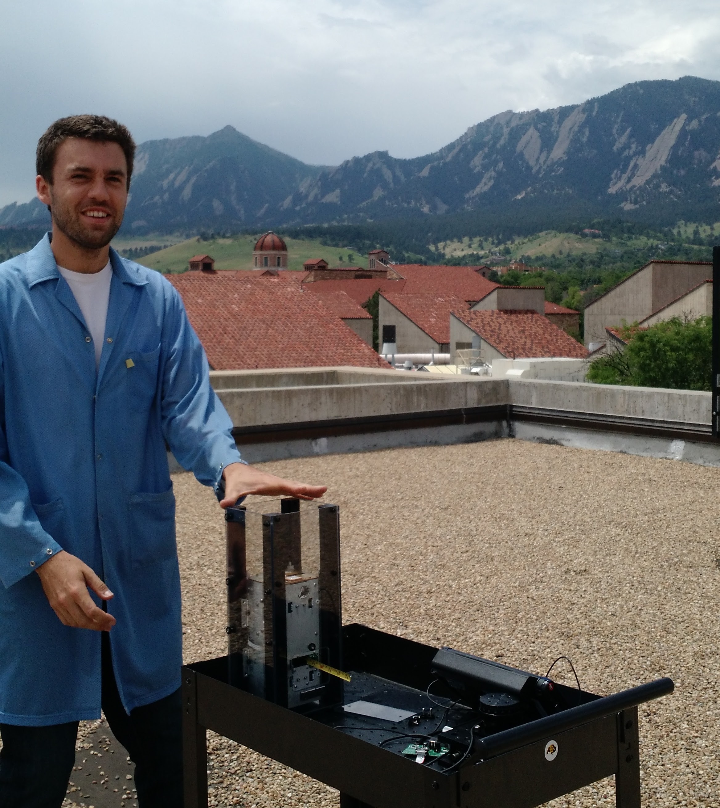
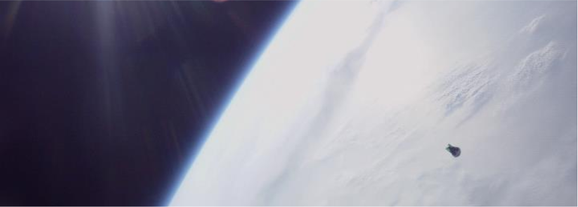
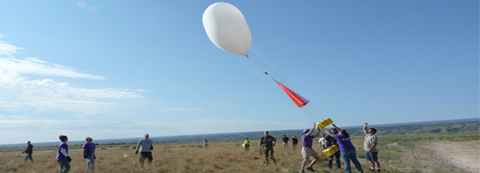
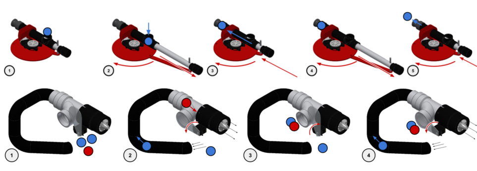
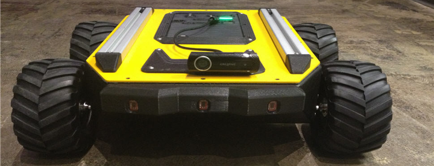
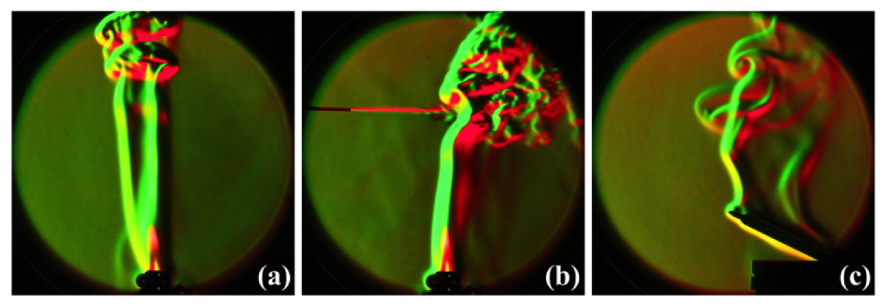
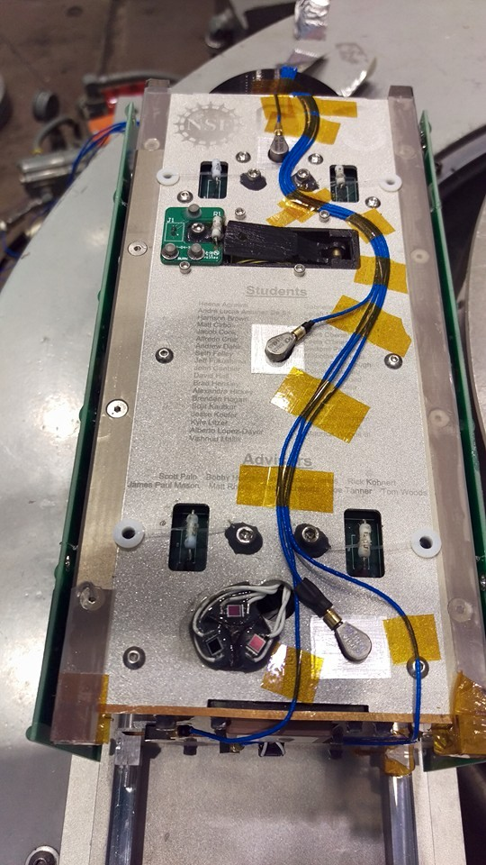
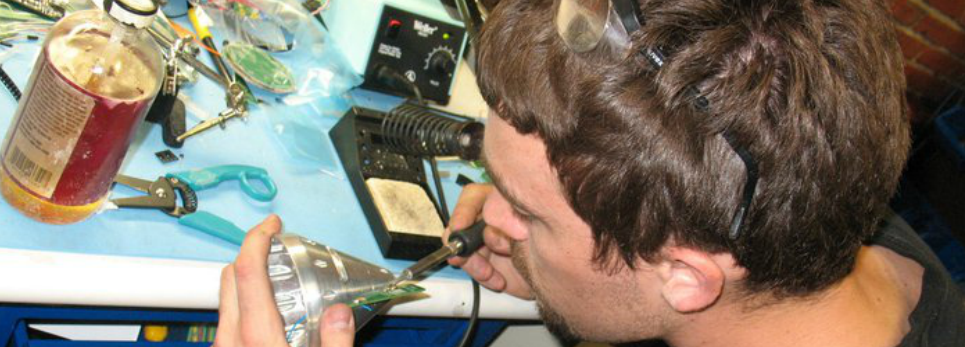
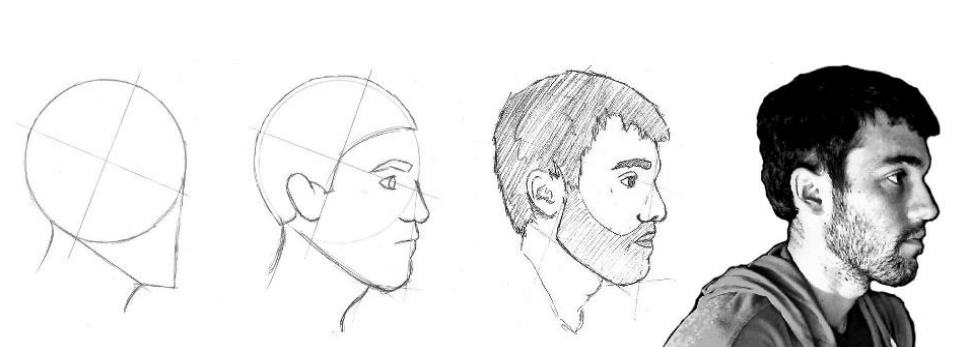

Hello there! I'm Maurice Woods - Aerospace engineer and space junky from Colorado. Born in California and raised in Southern Colorado, I've devoted myself to becoming the best, most well-rounded engineer that I can be.
As for my formal education, I own a bachelor's of science in Physics and Astronomy, which I acquired in 2012 from the University of Northern Colorado in Greeley, CO. At present, I'm enrolled in the Masters of Aerospace Engineering program at the University of Colorado at Boulder, where I am focusing on control systems and embedded systems engineering. Since my enrollment, I've explored embedded systems (hardware and software) design, software defined radio communications systems, and spacecraft attitude dynamics, determination, and control. Additionally, I've been involved in two cubesat missions (one of which will launch in March 2017), explored small hobbyist robotics projects, and exercised my electrical and software development and debugging skills as a project consultant and a Teaching Assistant at CU's Integrated Technology and Learning Laboratory.
I have compiled a portfolio of my notable projects and skills in the hopes that you might find something interesting! If, by chance, you'd care to contact me, consider my contact information found in the preamble of my resume.

As I say in the introduction of my resume: "A Multidisciplinary scientist-made-engineer eager to apply my acquired knowledge and skills in a collaborative engineering environment to further mankind’s space-faring capabilities through the application of embedded systems and spacecraft control systems technologies, spurring the curiosity of next-generation scientists to explore the frontiers of science." While this holds true in principle, it is, admittedly, a statement that does not capture how great my passion is for space and the technology that we use to explore it. In many ways, due to the fact that my undergraduate university did not offer a formal engineering curriculum, many of my early skills and projects were products purely of my curiosity, my love for learning, and my drive to be part of something worthwhile, fascinating, and (hopefully) new. I’ve surrounded myself with people who share my passions and who push me to be better and learn more through their example, and relish the opportunities to work on projects with people who either have little experience in my field (people I can teach) or who have experience in subjects that I know little about (projects that can teach me something entirely new). Whether it be the restoration of an old Newtonian reflector telescope at my local Makerspace, helping improve the control of my roommate’s Battle Bot “Poison Arrow”, or enrolling in a communications class in order to become more knowledgeable of the other subsystem’s in my cubesat project, I am always hungry for more things to learn.
- portfolio of maurice woods iii -
PROJECTS

Here you will find an overview of several projects in which Maurice has been involved over the past few years. Click on each header to expand its contents and be sure to check out any links that may provide extra information on the various programs (e.g. Rocket Sat) and companies (RoadNarrows Robotics) with which I've worked.
QB50 Challenger is a 2.5U cubesat bus which hosts an Ion Neutral Mass Spectrometer, provided by the Von Karman Institute in Belgium. The spacecraft is scheduled to launch to the ISS in March where it will await deployment into Low-Earth Orbit for just under a year. My role on the project was that of software/firmware engineer as part of the Command and Data Handling system team. With this, I was responsible for rigorously testing the software used to handle commands sent from the ground station, which would be interpreted and forwarded the appropriate subsystem. Additionally, I was the developer for the ground station user interface which gathered and reported all of the telemetry sent to and received from the spacecraft. Over the summer of 2016, I worked as an employee of the Colorado Center for Astrodynamics Research to continue work on this project with a small group of other students. Over this period, we conducted two thermal-vacuum tests of the spacecraft and conducted a rigorous set of flight-readiness tests on the spacecraft bus and its INMS payload, including several long-range communications tests which tested the robustness of the C&DH's ability to perform an upload and flash of an ADCS image to the system on flight.
MAXWELL is a 6U cubesat currently being developed as part of CU's Aerospace Graduate Projects course. The satellite mission aims to demonstrate the performance of an X-band reflectarray antenna using CDMA (code division multiple access) in the hopes that this technology will allow the ever-growing number of Earth-orbiting satellites to communicate despite crowding in the conventionally used radio bands. My involvement on the project was to extend the Attitude Determination and Control System of the QB50 mission to accommodate a new set of reaction wheels which would provide greater control authority and precision to the spacecraft. While on this project, I also assisted the CU-E3 CubeQuest mission in design decisions concerning their C&DH and flight software systems.
The Rocket SAT-X program allows for deployable out of the rocket (once the rocket reaches an apogee of 160km). The ReEntry Experiment (ReX) Capsule was designed to be jettisoned from the rocket body, where it reentered the earth's atmosphere while taking large amounts of inertial-dynamic data relating to the amount of air resistance experienced by the vehicle body. The payload was required to survive the violent reentry process, terrestrial impact, and was to be recovered from the Atlantic Ocean several hours after launch. This project launched in August of 2011.
Some of the videos and other media (including some presentation slides) can be found on the ReX SAT-X's Facebook page
weather balloon science payloads2010
Sun Spectro Sat
Understanding Appearance Of Fraunhaufer Spectral Lines With Respect To Altitude
Sun Spectro Sat (SSS; by Maurice Woods, Motoaki Honda, and Sara Gray) is a high altitude spectrometer payload designed to collect data concerning the absorption of solar light by the Earth's atmosphere at different altitudes. This project was done as a part of the Frontiers of Science Institute (FSI) UNC Undergraduate research opportunity, where high school students Sara Gray, Jim Wiley, and Erik Travis joined the UNC undergraduate students for these demo sat launches
2008
Go Green! Sat
Exploring Energy Recapturing Techniques for Tumbling Payloads
Role: Hardware Integration and Testing

My first student project! The Go Green demosat balloon payload incorporated several energy reclamation systems in an effort to extend the battery life of student balloon payloads. The payload included a Peltier plate (which used the temperature difference between the interior and exterior of the payload to generate power), a flexible solar panel, and a magnetic pendulum (which used the turbulence of flight to induce a current in a coil of wire)
robotic and electromechanical systems2016
Hungry Hungry Hippo Challenge
Robot built to collect and shoot ping pong balls through hoops
Role: Team Lead, Mechanisms, Structures, Electrical Power Systems

This robot was designed and built as a project in the "Mechatronics and Robotics" course at CU. In an attempt to build something outlandish and different, I created a ducted fan-powered vacuum system which fed ping pong balls to a piston driven pop gun which performed with remarkable accuracy. I designed the robot's chassis, the piston mechanism, and the electrical systems (which included motor drivers and a hardware-based vision system for tracking IR beacons)
At RoadNarrows, I became involved with the company's flagship project, Hekateros - a 3D printed 5-DOF robotic manipulator for educational research applications. It was on this project that I first learned PBC design through the EAGLE schematic capture CAD program and was heavily involved in the debugging process for the electronics which powered the arm. Here is the Hekateros Product Page
2012
Kuon
Four-Wheeled Smart Mobile Platform (RoadNarrows)
Role: HID Control Software

Concurrent with my time on Hekateros at RoadNarrows Robotics, I was involved with the structural design and the software design for the Kuon family of 4-wheeled robotic platforms. Again, here was my first experience with programming in C++ where I focused on the user interface control of the platform.
experiments in the physical sciences2012
Schlieren Imaging
Color schlieren imaging with a two-path, double knife edge system
Role: Primary Investigator

This was the project which became my undergraduate thesis from the University of Northern Colorado. With Jan Chaloupka, I assembled the optical equipment used to create a two-path schlieren imaging experiment using a Mach-Zender interferometer. Abstract: The traditional arrangement for visualizing optical phenomena with the schlieren technique is modified to include a Mach-Zehnder geometry. This allows for the implementation of two independent knife edges along two different beam paths, resulting in an enhanced combined image that is uniquely adjustable. Post-processed combined images are also generated by spatially separating the paths from each arm and then colorizing and combining the images into a single composite. In this way, bidirectional, color schlieren images have been produced using both white-light and monochromatic sources.
First, let me say: as I am not a particularly gifted writer, here is a link to a very well-written article concerning QB50 and the CU Boulder Aerospace Cubesat team
This mission, which was just launched to the ISS and is awaiting deployment in mid-May, was a student-lead project intended to provide a complete 2.5U cubesat but for a 3rd party science payload (an INMS from the European institute VKI). My role focused on flight software, particularly for the Command and Data Handling systems (using a PIC18 microcontroller), and Ground Station software and testing. This involved creating a task-based operations manager which managed the execution of each of the CDH's responsibilities, including interactions with the ADCS (e.g. task negotiation and timing), communication with the Ground station (e.g. data packet handling and telemetry generation and interpretation), communication with and command of the science instrument (INMS; complete with rigorous testing as requested by our customer, VKI), and other base-system functions (radio operations scheduling, battery heater monitoring, and sensor polling/interpretation). The ground system used was a utility developed by CU's LASP (application called HYDRA) which I was responsible for outlining, designing, implementing, and managing as part of the day-in-the-life and TVAC testing processes and for upcoming flight operations. This involved a thorough characterization of the spacecraft's sensors and the CDH's handling of such data (tested heavily during TVAC) and a full understanding o the packet structure used to interface the ground station through the transceiver and to/from the cubesat's communications system. I expect to be involved in the flight operations of the satellite upon deployment at the beginning of the summer.
QB50 Launch Video
QB50 Top with Names of Students

- portfolio of maurice woods iii -
MAXWELL
Cubesat Mission
This mission is an ongoing student-lead project intended to conduct a technology demonstration of an X-band reflectarray antenna using Code Division Multiple Access communication protocol aboard a 6U cubesat. My role on the project is in the ADCS hardware and software subsystems, where I am currently involved in implementing (and contributing to on a higher level) a control algorithm with legacy hardware inherited from the QB50 mission (listed previously). So far, I have been involved in upgrading the control authority of the spacecraft to incorporate a set of three reaction wheels along with the system's preexisting magnetorquer actuators. This has involved sourcing the actual reaction wheel components, establishing a communication protocol between the wheel controllers and the ADCS computer (a Beagle Bone Black), upgrading the electronics used for attitude sensing (namely the sun heading sensors and the amplification/signal conditioning circuits which support them), and modifying the implementation of the control law to incorporate the new reaction wheel actuators. I have also acted as the ADCS systems lead for my time on this project, which has involved orienting new team members to the CU Aerospace Cubesat Teams' design standards and acting as the point man for discussions involving the ADCS's interactions/integration with other subsystems (namely the CDH). This summer, I plan to continue my work on this project as we begin to test and characterize the performance of our hardware/algorithm with EDU hardware.
- portfolio of maurice woods iii -
Reentry Experiment SAT-X
Sounding Rocket Payload
This mission, launched back in 2011, was conducted as part of the Rocket SAT-X program organized by the Colorado Space Grant Consortium at CU. At the time, I was an undergraduate at UNC in Greeley, Colorado, studying physics. My role on this project was that of a project manager. I was responsible for communicating with our launch organizers and program directors at CU and organized all of the literature and materials for the various design reviews, presentations, and workshops involved with the Rocket SAT-X program. In addition to management, I was heavily involved in learning the systems developed by my project team members; this is where, as a physics student, I made my first moves toward engineering. I was responsible, in part, for the design of the payload's structure and for the integration/assembly of the electrical power system of the payload. Once the design and assembly of the payload were complete, I was the lead test engineer, where I lead the efforts to characterize the performance of the IMU and temperature sensors used to gather data upon reentry.
- portfolio of maurice woods iii -
Sun Spectro Sat
Balloon Payload
Sun-Spectro SAT (Balloon Payload) - During my time as an undergraduate at UNC, I was involved in several high-altitude weather balloon payload projects with the Colorado Space Grant Consortium. One notable project involved the measurement of spectral absorption patterns as a function of altitude (considering that the sun's "uniform" spectrum is filtered through the atmosphere). While this was early in my physics career and I was no more than a novice engineer, I and another student designed a payload which focused, diffracted, and recorded the sun's light spectrum over the course of a 2-hour balloon flight. While I was heavily involved in every aspect of the mission, I may highlight the work I did to understand the optical equipment used to conduct this experiment, and further, the integration of these optics to record this data for later use. This also involved the testing and design of a subsystem that was responsible for providing a suitable climate within the sensors' housing (namely for maintaining suitable operating temperatures and humidity levels considering the dramatic variation in climate with an increase with altitude)
- portfolio of maurice woods iii -
Hekateros
5-DOF Robotic Manipulator Arm
After graduating from UNC, I began work at a local robotics company named RoadNarrows Robotics. One of several projects that I was involved in at that time was a 5DOF robotic manipulator arm, for which I supported the electrical power system design and the user interface software design. Though a novice at the time, I successfully integrated the control scheme for using an Xbox (gaming system) controller to control the manipulator. This control interface included speed control for each actuator, various control options for variable use (e.g. relative/POV control and absolute joint control), and operational bounds for safe operations (e.g. the ability to set custom boundaries and safe-operating spaces for use in varied environments). For the electrical subsystem, I worked under the guidance of the lead electrical engineer to CAD, assemble, and debug the PCBs used to route power and data through the system. This was largely a lesson in PCB capture, but also involved some investigation into USB communication and circuit debugging (including debugging filtering and communications circuitry). As this system was designed to work with other products produced by RoadNarrows (namely a 4-wheeled mobile robotic platform), I gained experience in designing modular and expandable systems though this project.
- portfolio of maurice woods iii -
SKILLS

TECHNICAL
- control systems engineering -
During my time at the University of Colorado at Boulder, I've focused my studies on control systems engineering and have enrolled in several courses which explore this material (Linear Control Systems, Automatic Control Systems, and Spacecraft Attitude Dynamics and Control). These courses have all included extensive projects which have bolstered my understanding of the implementation of these control systems concepts on physical hardware
- embedded systems engineering -
While outside of my declared focus area, I've spent several years exploring embedded systems design through both formal courses at CU and in personal projects. The most notable application of my knowledge in this field has been in the development of the Command and Data Handling system used on the QB50 Challenger cubesat mission from CU. Here, I learned to implement and test robust software which would be responsible for autonomous and manual control of the spacecraft on orbit
- electrical systems design -
My formal education in electrical engineering accounts for only half of my experience on the subject. A robotics and mechatronics course bolstered my understanding in circuit design and component characterization, but my experience at RoadNarrows Robotics spurred my interests in electrical systems design and was responsible for my satisfactory soldering skills and for my experience with schematic capture applications
- software engineering -
Several projects have inspired my skills as a software engineer; the necessity for a competent programmer has been responsible for my rapid growth in bare-metal firmware design for both educational and professional projects. I've quickly grown comfortable with C, Python, and Matlab programming languages and have had some extensive experience with implementing my code on hardware. This includes the rigorous software testing that goes along with software implementation (specifically concerning the Flight Software that I wrote for the QB50 Challenger cubesat mission)
Swing over to the QB50 and MAXWELL project pages to see some more on what I've done with embedded software projects
- mechanical design -
My propensity for mechanical design has long been inspired by my fascination with mechanisms (specifically spacecraft mechanisms and structures) and the tools used to create them. With the tools and knowledge made available by the CU staff, as well as that of my peers who have mentored me, I've become competent in using 3D printers, laser cutting tables, and mill machining.

ART & DESIGN
- graphic design -
While I will never claim to be a professional artist, I do enjoy sharing some of my doodles and drawings with anyone who might enjoy/appreciate seeing the variety in different people's drawing styles. Feel free to poke through some of the graphics that I find worth sharing here
- web and print media -
As evidenced by this website, I have explored a bit about web design and web programming (although I'm truly only very experienced with HTML, PHP, and styling languages). However, I have designed some advertising materials for RoadNarrows Robotics, MPI Probe Labs, and the Loveland CreatorSpace which I am quite proud of, some can be viewed here
Felipe climbs trees, has two left ears, and loves riding on my motorcycle :3 More to come on this page, but if you happen to be spending time with him (or taking care of him), you might be interested in his calendar.